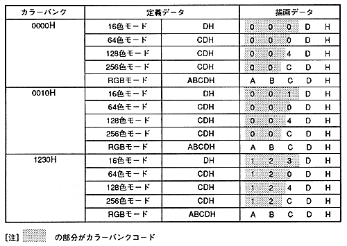

- The data written to the frame buffer is transferred to the VDP2 as 16-bit data when it becomes the display buffer in the next frame.
- The relationship between the color bank, defined character pattern data, and drawing frame buffer data is shown below.
Table 6.4 Example of relationship between color bank, definition data, and drawing data
